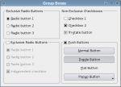

Qt Widgets Examples

Qt comes with a large range of standard widgets that users of modern applications have come to expect.
You can also develop your own custom widgets and controls, and use them alongside standard widgets.
It is even possible to provide custom styles and themes for widgets that can be used to change the appearance of standard widgets and appropriately written custom widgets.
The Analog Clock example shows how to draw the contents of a custom widget. | |
The example shows how to use signals and slots to implement the functionality of a calculator widget, and how to use QGridLayout to place child widgets in a grid. | |
The Calendar Widget example shows use of QCalendarWidget. | |
Shows how to render a textured cube and integrate with QPainter and widgets, using QRhi Qt's 3D API and shading language abstraction layer. | |
A Widgets application to display and print JSON, text, and PDF files | |
The Group Box example shows how to use the different kinds of group boxes in Qt. | |
The Line Edits example demonstrates the many ways that QLineEdit can be used, and shows the effects of various properties and validators on the input and output supplied by the user. | |
The Scribble example shows how to reimplement some of QWidget's event handlers to receive the events generated for the application's widgets. | |
The Shortcut Editor example shows how to create a basic, read-write hierarchical model to use with Qt's standard view and QKeySequenceEdit classes. For a description of Model/View Programming, see the Model/View Programming overview. | |
Shows how to render a triangle using QRhi, Qt's 3D API and shading language abstraction layer. | |
The Sliders example shows how to use the different types of sliders available in Qt: QSlider, QScrollBar and QDial. | |
The Spin Boxes example shows how to use the many different types of spin boxes available in Qt, from a simple QSpinBox widget to more complex editors like the QDateTimeEdit widget. | |
The System Tray Icon example shows how to add an icon with a menu and popup messages to a desktop environment's system tray. | |
This example shows how to use a Wacom tablet in Qt applications. | |
The example shows how to make a round window with a translucent background. | |
The Widgets Gallery example shows widgets relevant for designing UIs. | |
The Window Flags example shows how to use the window flags available in Qt. |